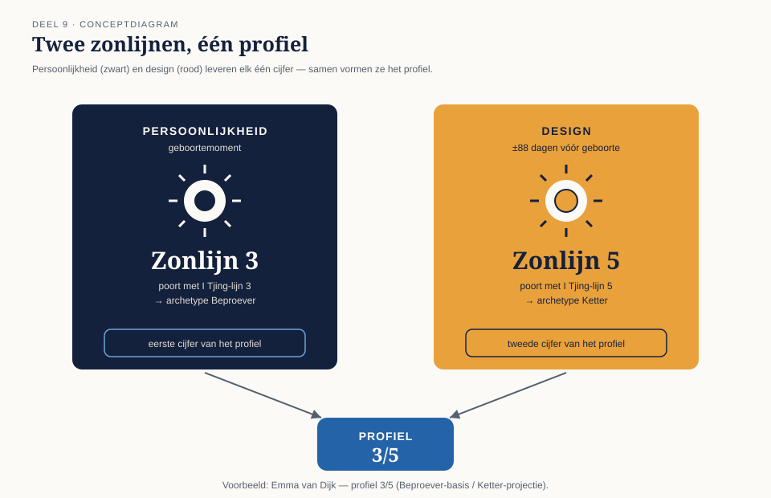
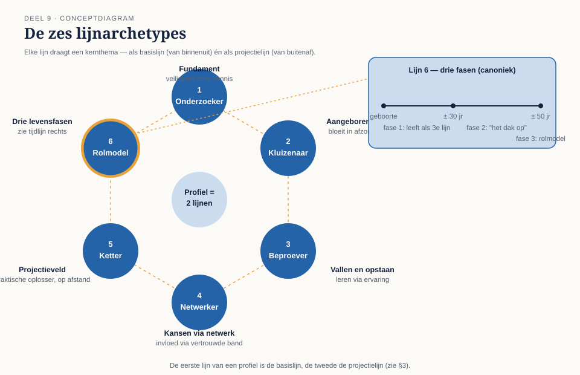
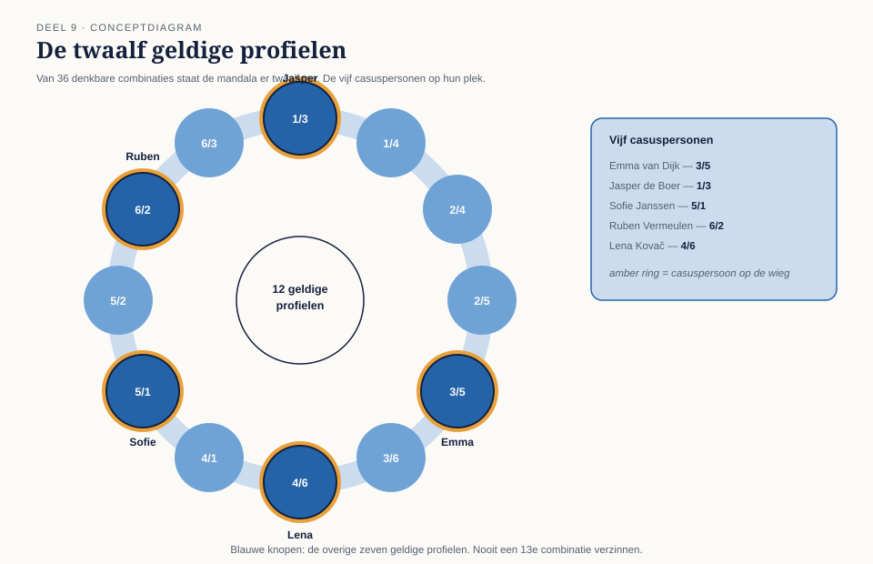

Waar niveau 1 het geraamte gaf — type, strategie, autoriteit, centra — voegt niveau 2 de lagen toe die verklaren hóé iemand dat geraamte concreet invult. De eerste laag is het profiel: twee cijfers, zoals Emma's 3/5, die beschrijven met welke rol of speelstijl je door het leven gaat. In dit deel leert u de zes lijnarchetypes kennen, hoe een profiel wordt afgeleid, en waarom van de zesendertig denkbare combinaties er maar twaalf daadwerkelijk voorkomen.
8secties
±1,5udagdeel + huiswerk
11controlevragen
12geldige profielen
Positionering. Human Design is een symbolisch zelfreflectiesysteem, geen wetenschappelijk bewezen model. De vijf casuspersonen (Emma, Jasper, Sofie, Ruben, Lena) zijn fictief en gestipuleerd voor het onderwijs, niet berekend uit echte geboortegegevens. Sectie 7 van dit deel bevat een expliciete kanttekening bij de lijnarchetypes zelf.
01
Wat een profiel is
⏱ 12 min
Terug naar deel 2: elke chart kent twee berekeningen — de zwarte (persoonlijkheid, geboortemoment) en de rode (design, ±88 dagen ervoor). Beide berekeningen kennen een zonpositie, en die zonpositie valt altijd in een van de 64 poorten, die op zijn beurt altijd een van de zes I Tjing-lijnen draagt (deel 1, paragraaf 3.1). Het profiel is simpelweg dit paar: [lijn van de persoonlijkheidszon] / [lijn van de designzon] — bij Emma dus 3/5, bij Jasper 1/3. De volgorde ligt vast: persoonlijkheid altijd eerst.
Waar type en autoriteit mechanismen beschrijven (hoe je energie werkt, hoe je beslist), beschrijft het profiel in de canon een rol: de karakteristieke manier waarop je leert, je aan anderen toont en door levensfasen beweegt. De vaste vergelijking die de leer zelf gebruikt: type is de motor, autoriteit is het stuur, profiel is de outfit waarin je rijdt — zelfde auto, ander silhouet.

Figuur 9-1 — persoonlijkheid (zwart) en design (rood) leveren elk één zonlijn; samen vormen ze het profiel
02
De zes lijnen: archetypes met een thema
⏱ 22 min
Elke lijn draagt een canoniek thema, dat zowel op zichzelf (als eerste cijfer, de "basislijn" waarmee je van binnenuit leeft) als in combinatie met een tweede lijn (de "projectielijn", hoe anderen je zien en benaderen) werkt.
Lijn 1 — Onderzoeker
Thema: fundament, veiligheid door kennis. Wil de basis van een zaak zelf doorgronden voordat hij zich er zeker over voelt; comfortabel alleen studerend, ongemakkelijk met oppervlakkigheid bij zichzelf of anderen. Valkuil: eindeloos verder studeren als excuus om niet te beginnen; onzekerheid vertalen naar wantrouwen jegens wie het "makkelijker" lijkt te weten.
Lijn 2 — Kluizenaar
Thema: aangeboren talent, dat het beste tot bloei komt in relatieve afzondering en pas naar buiten komt als het geroepen wordt. Comfortabel in eigen tijd en ruimte; van nature een goede leraar zodra iemand er echt om vraagt. Valkuil: geroepen worden voor dingen die niet bij het eigen talent passen ("verkeerde roeping") en zich daarin verliezen; zich afsluiten uit gewoonte in plaats van uit behoefte.
Lijn 3 — Beproever
Thema: leren door vallen en opstaan; kennis die alleen via directe, vaak hobbelige ervaring beklijft. Bindingen aangaan, weer loslaten, en daarmee precies leren wat níet werkt — canoniek de meest praktische en veerkrachtige van de zes lijnen. Valkuil: het eigen leerproces (of dat van anderen) verwarren met persoonlijk falen; pessimisme over "altijd dezelfde fouten maken" in plaats van het als methode te zien.
Lijn 4 — Netwerker
Thema: kansen en invloed die via een hecht, vertrouwd netwerk lopen, niet via de vreemdeling. Van nature een vriendengroep-bouwer, met invloed die groeit vanuit persoonlijke banden. Valkuil: vastzitten in een netwerk dat niet meer bij de eigen ontwikkeling past, uit loyaliteit; het eigen fundament (vaak in combinatie met een 1) verwaarlozen ten koste van sociale verplichtingen.
Lijn 5 — Ketter / Projectieveld
Thema: praktisch probleemoplossend vermogen dat door anderen op afstand wordt herkend — en daarmee onderworpen aan projectie: de een ziet een redder, de ander een bedrieger, vaak zonder dat de persoon zelf daar iets aan gedaan heeft. Canoniek de meest "algemene" lijn: oplossingen die voor een grote groep werken. Valkuil: projecties (verwachtingen én verwijten) internaliseren als eigen identiteit; het universele karakter van de oplossing verwarren met persoonlijke onfeilbaarheid.
Lijn 6 — Rolmodel
Thema: drie levensfasen. Tot ongeveer het dertigste jaar leeft een 6e lijn (canoniek) grotendeels als een 3e lijn — beproevend, bindend en weer loslatend. Daarna volgt een periode van relatief terugtrekken en observeren ("het dak op"), tot rond het vijftigste jaar de derde fase intreedt: leven als zichtbaar voorbeeld voor anderen, met een geloofwaardigheid die alleen ontstaat ná de eerdere twee fasen. Valkuil: van anderen (of van zichzelf) in fase één of twee al de bezonnenheid van fase drie verwachten.

Figuur 9-2 — de zes lijnarchetypes, met bij lijn 6 de drie-fasen-tijdlijn
Controlevragen
Uit Werkboek deel 9, Opdracht 9.1 — zes lijnen, zes kernwoorden
1Welk lijnarchetype hoort bij het kernwoord "aangeboren talent dat tot bloei komt in afzondering", en wat is de bijbehorende valkuil?Toon antwoord
Lijn 2 — Kluizenaar. Valkuil: geroepen worden voor dingen die niet bij het eigen talent passen ("verkeerde roeping") en zich daarin verliezen, of zich uit gewoonte afsluiten in plaats van uit behoefte.
2Welk lijnarchetype hoort bij het kernwoord "kansen en invloed via een hecht, vertrouwd netwerk", en wat is de bijbehorende valkuil?Toon antwoord
Lijn 4 — Netwerker. Valkuil: uit loyaliteit vastzitten in een netwerk dat niet meer bij de eigen ontwikkeling past, of het eigen fundament verwaarlozen ten koste van sociale verplichtingen.
03
Basislijn en projectielijn
⏱ 14 min
In een profiel werkt de eerste (persoonlijkheids-)lijn overwegend van binnenuit — hoe je zelf denkt en leert — en de tweede (design-)lijn overwegend naar buiten — hoe anderen je aanspreken en wat ze van je verwachten. Bij een 3/5 (Sofie) betekent dit canoniek: van binnen een beproever die leert via vallen en opstaan, naar buiten een 5e lijn waarop de omgeving oplossingen en — onvermijdelijk — projecties afvuurt. Dat onderscheid — basis versus projectie — is minstens zo belangrijk als de losse lijnbetekenissen zelf: het verklaart waarom iemands zelfbeeld en de manier waarop anderen diegene lezen, systematisch uiteen kunnen lopen.
Controlevragen
Uit Werkboek deel 9, Opdracht 9.3 — basis of projectie?
1"Ik voel me pas zeker als ik het zelf grondig heb uitgezocht." Basislijn- of projectielijn-effect?Toon antwoord
Basislijn (lijn 1, Onderzoeker) — van binnenuit, hoe je zelf leert en denkt.
2"Collega's vragen mij steeds om advies, ook als ik daar niet naar op zoek was." Basislijn- of projectielijn-effect?Toon antwoord
Projectielijn (lijn 5, Ketter) — van buitenaf, het projectieveld dat anderen op je richten.
3"Ik leer het beste door het gewoon te proberen en te zien wat er misgaat." Basislijn- of projectielijn-effect?Toon antwoord
Basislijn (lijn 3, Beproever) — van binnenuit, leren via vallen en opstaan.
4"Mensen verwachten van mij dat ik als vanzelfsprekend het goede voorbeeld geef." Basislijn- of projectielijn-effect?Toon antwoord
Projectielijn (lijn 6, Rolmodel) — hoe anderen je benaderen, ongeacht in welke van de drie levensfasen je zelf zit.
5"Ik voel me het prettigst met een klein, vertrouwd groepje mensen om me heen." Basislijn- of projectielijn-effect?Toon antwoord
Basislijn (lijn 4, Netwerker) — van binnenuit, comfort in een hecht eigen netwerk.
6"Vreemden zien in mij blijkbaar sneller een oplossing dan ikzelf doe." Basislijn- of projectielijn-effect?Toon antwoord
Projectielijn (lijn 5, Ketter) — de omgeving projecteert een oplossing (of een oordeel) die de persoon zelf niet als vanzelfsprekend ervaart.
04
De twaalf geldige profielen
⏱ 16 min
Van de zesendertig denkbare combinaties (6 × 6) komen er in de canon maar twaalf daadwerkelijk voor; de structuur van de mandala (deel 1) staat de overige combinaties niet toe. De twaalf:
Profiel
Basis / projectie
Profiel
Basis / projectie
1/3
Onderzoeker / Beproever
4/6
Netwerker / Rolmodel
1/4
Onderzoeker / Netwerker
5/1
Ketter / Onderzoeker
2/4
Kluizenaar / Netwerker
5/2
Ketter / Kluizenaar
2/5
Kluizenaar / Ketter
6/2
Rolmodel / Kluizenaar
3/5
Beproever / Ketter
6/3
Rolmodel / Beproever
3/6
Beproever / Rolmodel
4/1
Netwerker / Onderzoeker

Figuur 9-3 — de twaalf geldige profielen, met Emma (3/5), Jasper (1/3), Sofie (5/1), Ruben (6/2) en Lena (4/6) op hun plek
Let op — geen 3/1
Elk profiel heeft zijn "spiegelprofiel" — maar niet door de cijfers simpelweg om te draaien. 3/1 komt bijvoorbeeld niet voor; het geldige paar is 1/3 en 4/1, niet 3/1. Verzin nooit zelf een combinatie: check altijd tegen de twaalf hierboven.
Controlevraag
Uit Werkboek deel 9, Opdracht 9.2 — geldig of verzonnen?
1Van de volgende tien profielen zijn er zes geldig en vier verzonnen: 1/3 — 2/6 — 3/5 — 4/2 — 4/6 — 5/3 — 5/1 — 6/1 — 6/2 — 2/4. Welke vier zijn verzonnen?Toon antwoord
Verzonnen (komen niet voor in de twaalf): 2/6, 4/2, 5/3, 6/1. Geldig zijn: 1/3, 3/5, 4/6, 5/1, 6/2 en 2/4 — stuk voor stuk terug te vinden in de tabel van paragraaf 4.
05
De vijf personen: profiel als aanvulling, niet als vervanging
⏱ 16 min
Emma — 3/5. Beproever-basis, Ketter-projectie. Haar sacrale werkkracht (niveau 1) krijgt hier een leerstijl bij: Emma ontdekt wat werkt door het te doen en het soms fout te laten gaan — en de canon voorspelt dat collega's haar oplossingen als algemeen toepasbaar zien, met het risico van projectie (redder of zondebok) wanneer het misgaat. Haar aarzeling over de beleidsfunctie krijgt zo een derde laag: niet alleen sacraal (deel 3) en milt (deel 5), maar ook profiel — een 3e lijn wantrouwt terecht "op papier goed klinkende" overstappen die nog niet in de praktijk beproefd zijn.
Jasper — 1/3. Onderzoeker-basis, Beproever-projectie. Zijn scherpe, gedefinieerde ajna (niveau 1) krijgt hier verklaring vanuit een andere hoek: een 1e lijn wil de zaak grondig doorgronden vóór hij zich uitspreekt — precies wat zijn Projector-strategie (wachten op uitnodiging) al vroeg, nu vanuit een extra invalshoek bevestigd. Zijn 3e-lijns-projectie betekent dat collega's zijn ongevraagde inzichten soms lezen als "weer een experiment dat toch niet klopt" — een tweede verklaring naast bitterheid (deel 3) voor de weerstand die hij ervaart.
Sofie — 5/1. Ketter-basis, Onderzoeker-projectie — het spiegelbeeld van Jasper. Haar drie sporen (foodtruck, catering, opleiding) zijn vanuit profiel-oogpunt geen chaos maar 5e-lijns-praktijkoplossingen in wording; de projectie van "redder of zondebok" die in haar situatieschets al genoemd werd (deel 1) heeft hier haar exacte kaart-adres. De 1e-lijns-projectie betekent dat de omgeving van haar tegelijkertijd grondige onderbouwing verwacht — een spanning die haar MG-tempo (niveau 1) nog voelbaarder maakt.
Ruben — 6/2. Rolmodel-basis, Kluizenaar-projectie. Op 52 zit hij canoniek middenin de overgang van fase twee (het dak op) naar fase drie (rolmodel) — wat zijn nieuwe schoolleidersrol een extra lading geeft: de leer zou voorspellen dat hij nú pas de geloofwaardigheid opbouwt waarnaar hij als initiërende Manifestor (niveau 1) altijd al handelde, maar die door zijn omgeving eerder werd gewantrouwd (fase 1-3-gedrag herkennend uit zijn jongere jaren). Zijn 2e-lijns-projectie: mensen verwachten van hem een natuurlijk, ongevraagd voorbeeld — precies waar zijn ego-autoriteit (deel 4) om vraagt: wíl hij die rol, of wordt hij er alleen in geroepen?
Lena — 4/6. Netwerker-basis, Rolmodel-projectie — de enige van de vijf met een 6e lijn in de projectie, wat opvallend samenvalt met haar Reflector-mechaniek: precies het type dat volgens de leer het langst moet wachten en het meest van de omgeving afhankelijk is, draagt een profiel dat een deel van het leven "op het dak" observerend doorbrengt. Haar netwerk-basis (4) verklaart canoniek waarom haar drie werklocaties niet zomaar willekeurige plekken zijn: een 4e lijn functioneert het best binnen een vertrouwd, persoonlijk netwerk — wat een extra reden geeft om haar wisselende gevoel per locatie (niveau 1, deel 6) ook te bekijken vanuit de vraag hoe vertrouwd elk netwerk daar eigenlijk is.
06
Stapelen, uitgebreid
⏱ 12 min
De stapel-oefening uit deel 5 breidt vandaag uit met een vierde laag. Een volledige, gestapelde beschrijving combineert nu: centrum + kanaal (wát) + type/autoriteit (hoe je handelt en beslist) + profiel (hoe je dat speelt en leert). Bijvoorbeeld: "Emma's gedefinieerde sacraal via 34-57 (niveau 1) maakt haar een Generator met sacrale autoriteit; haar 3/5-profiel (vandaag) voorspelt dat ze dat vooral al doende en al struikelend ontdekt, terwijl haar omgeving haar bevindingen als algemeen bruikbaar — en dus vatbaar voor projectie — zal lezen." Vier lagen, één verhaal, nog altijd afgesloten met een toetsvraag in plaats van een vonnis.
Controlevraag
Uit Werkboek deel 9, Opdracht 9.4 — de vijf profielen, gestapeld
1Schrijf, naar het model uit paragraaf 6, een gestapelde beschrijving van vier lagen voor Ruben: centrum/kanaal + type/autoriteit + profiel, afgesloten met een toetsvraag.Toon antwoord
"Ruben's gedefinieerde keel, hart en G via 21-45 (niveau 1) maken hem een Manifestor met ego-autoriteit; zijn 6/2-profiel (vandaag) voorspelt dat hij, na een periode van beproeven (fase 1) en terugtrekken ("het dak op", fase 2), nu op 52 middenin de overgang naar fase 3 zit — leven als rolmodel — terwijl zijn 2e-lijns-projectie betekent dat zijn omgeving van hem een natuurlijk, ongevraagd voorbeeld verwacht. Wíl Ruben die rolmodelrol, of wordt hij er vooral in geroepen?"
07
Eerlijke kanttekening: archetypes en nummerologie
⏱ 14 min
Zes archetypes met een kernthema is precies het soort structuur waarin het Barnum-effect (deel 1, deel 5) opnieuw goed gedijt — vergelijkbaar met sterrenbeelden of enneagramtypes. Twee dingen zijn hier specifiek het vermelden waard. Ten eerste: de I Tjing-lijnnummers zijn overgenomen zonder dat er een aangetoond verband is tussen hexagramposities en menselijk gedrag — dezelfde kanttekening als bij de poorten in deel 1. Ten tweede, specifiek voor lijn 6: de "drie levensfasen" veronderstellen een levensloop van pakweg tachtig-plus jaar met vaste kantelpunten rond dertig en vijftig — een cultureel bepaald levensritme, niet een universele wet. Gebruik het net als de rest: als herkenningsvraag, niet als voorspelling.
Controlevraag
Uit Werkboek deel 9, Opdracht 9.6 — de Barnum-check voor lijnen
1In deze oefening leest de docent zes lijnbeschrijvingen voor — drie uit de reader, drie ter plekke omgedraaide varianten (bijv. de valkuil van lijn 1 gepresenteerd als thema van lijn 5). Wat is het doel van deze oefening, en wat zegt de uitkomst doorgaans over de archetypes?Toon antwoord
Het doel is testen hoe goed deelnemers de omgedraaide varianten herkennen als "niet kloppend". Dat deelnemers dit vaak lastig vinden, illustreert het Barnum-effect uit paragraaf 7: kernthema's als "fundament, veiligheid door kennis" of "praktisch probleemoplossend vermogen" zijn breed genoeg geformuleerd dat ze — net als bij sterrenbeelden of enneagramtypes — ook aannemelijk klinken wanneer ze bij de verkeerde lijn worden gepresenteerd. Conclusie: gebruik de archetypes als herkenningsvraag, niet als bewijs.
08
Samenvatting en begrippenlijst
⏱ 8 min
Het profiel bestaat uit de zonlijn van de persoonlijkheid en de zonlijn van het design (bijv. 3/5) en beschrijft in de leer een rol of speelstijl: hoe je leert en je toont, niet wat je bent of hoe je beslist. Elk van de zes lijnen draagt een archetype met thema en valkuil (onderzoeker, kluizenaar, beproever, netwerker, ketter, rolmodel); de eerste lijn werkt overwegend van binnenuit (basis), de tweede overwegend naar buiten (projectie). Van de zesendertig denkbare combinaties komen er twaalf voor. Het profiel is de vierde laag in het stapelen, na centrum, kanaal en type/autoriteit — en verdient dezelfde eerlijke behandeling als elk ander onderdeel van het systeem: herkenbaar gereedschap, geen bewezen wet.
Eerste cijfer; overwegend hoe je van binnenuit leert en denkt
Projectielijn
Tweede cijfer; overwegend hoe anderen je benaderen en zien
Lijnarchetype
Canoniek thema van een van de zes I Tjing-lijnen
Fase-6-structuur
De drie levensfasen die de canon aan lijn 6 toekent (± 30 en ± 50 jaar als kantelpunten)
Twaalf geldige profielen
De combinaties die de mandala-structuur daadwerkelijk toestaat
Verder naar deel 10
Deel 10 duikt in poorten en kanalen: de specifieke inhoud achter elk van de 36 kanalen die u tot nu toe alleen als "compleet of hangend" hebt behandeld. Neem uw casusdossier en uw eigen chart mee.